Statistical learning: logistic regression
Objectives
- Demonstrate the use of logistic regression for classification
- Implement logistic regression using the
glm()function - Identify methods for assessing classification model accuracy
library(tidyverse)
library(modelr)
library(broom)
set.seed(1234)
theme_set(theme_minimal())Classification problems
The sinking of RMS Titanic provided the world with many things:
- A fundamental shock to the world as its faith in supposedly indestructible technology was shattered by a chunk of ice
- Perhaps the best romantic ballad of all time
A tragic love story

Why did Jack have to die? Why couldn’t he have made it onto a lifeboat like Cal? We may never know the answer, but we can generalize the question a bit: why did some people survive the sinking of the Titanic while others did not?
In essence, we have a classification problem. The response is a binary variable, indicating whether a specific passenger survived. If we combine this with predictors that describe each passenger, we might be able to estimate a general model of survival.1
Kaggle is an online platform for predictive modeling and analytics. They run regular competitions where they provide the public with a question and data, and anyone can estimate a predictive model to answer the question. They’ve run a popular contest based on a dataset of passengers from the Titanic. The datasets have been conveniently stored in a package called titanic. Let’s load the package and convert the desired data frame to a tibble.
library(titanic)
titanic <- titanic_train %>%
as_tibble()
titanic %>%
head() %>%
knitr::kable()| PassengerId | Survived | Pclass | Name | Sex | Age | SibSp | Parch | Ticket | Fare | Cabin | Embarked |
|---|---|---|---|---|---|---|---|---|---|---|---|
| 1 | 0 | 3 | Braund, Mr. Owen Harris | male | 22 | 1 | 0 | A/5 21171 | 7.2500 | S | |
| 2 | 1 | 1 | Cumings, Mrs. John Bradley (Florence Briggs Thayer) | female | 38 | 1 | 0 | PC 17599 | 71.2833 | C85 | C |
| 3 | 1 | 3 | Heikkinen, Miss. Laina | female | 26 | 0 | 0 | STON/O2. 3101282 | 7.9250 | S | |
| 4 | 1 | 1 | Futrelle, Mrs. Jacques Heath (Lily May Peel) | female | 35 | 1 | 0 | 113803 | 53.1000 | C123 | S |
| 5 | 0 | 3 | Allen, Mr. William Henry | male | 35 | 0 | 0 | 373450 | 8.0500 | S | |
| 6 | 0 | 3 | Moran, Mr. James | male | NA | 0 | 0 | 330877 | 8.4583 | Q |
The codebook contains the following information on the variables:
VARIABLE DESCRIPTIONS:
Survived Survival
(0 = No; 1 = Yes)
Pclass Passenger Class
(1 = 1st; 2 = 2nd; 3 = 3rd)
Name Name
Sex Sex
Age Age
SibSp Number of Siblings/Spouses Aboard
Parch Number of Parents/Children Aboard
Ticket Ticket Number
Fare Passenger Fare
Cabin Cabin
Embarked Port of Embarkation
(C = Cherbourg; Q = Queenstown; S = Southampton)
SPECIAL NOTES:
Pclass is a proxy for socio-economic status (SES)
1st ~ Upper; 2nd ~ Middle; 3rd ~ Lower
Age is in Years; Fractional if Age less than One (1)
If the Age is Estimated, it is in the form xx.5
With respect to the family relation variables (i.e. sibsp and parch)
some relations were ignored. The following are the definitions used
for sibsp and parch.
Sibling: Brother, Sister, Stepbrother, or Stepsister of Passenger Aboard Titanic
Spouse: Husband or Wife of Passenger Aboard Titanic (Mistresses and Fiances Ignored)
Parent: Mother or Father of Passenger Aboard Titanic
Child: Son, Daughter, Stepson, or Stepdaughter of Passenger Aboard Titanic
Other family relatives excluded from this study include cousins,
nephews/nieces, aunts/uncles, and in-laws. Some children travelled
only with a nanny, therefore parch=0 for them. As well, some
travelled with very close friends or neighbors in a village, however,
the definitions do not support such relations.So if this is our data, Survived is our response variable, and the remaining variables are predictors, how can we determine who survives and who dies?
A linear regression approach
Let’s concentrate first on the relationship between age and survival. Using the methods we previously learned, we could estimate a linear regression model:
ggplot(titanic, aes(Age, Survived)) +
geom_point() +
geom_smooth(method = "lm", se = FALSE)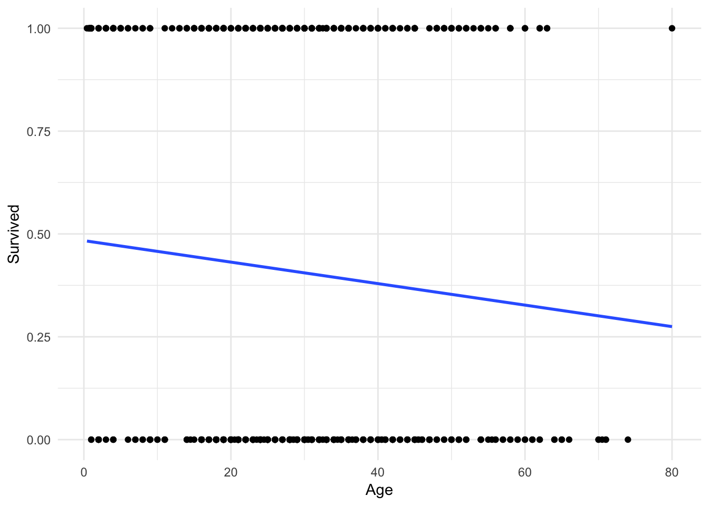
Hmm. Not terrible, but you can immediately notice a couple of things. First, the only possible values for Survival are \(0\) and \(1\). Yet the linear regression model gives us predicted values such as \(.4\) and \(.25\). How should we interpret those?
One possibility is that these values are predicted probabilities. That is, the estimated probability a passenger will survive given their age. So someone with a predicted probability of \(.4\) has a 40% chance of surviving. Okay, but notice that because the line is linear and continuous, it extends infinitely in both directions of age.
ggplot(titanic, aes(Age, Survived)) +
geom_point() +
geom_smooth(method = "lm", se = FALSE, fullrange = TRUE) +
xlim(0, 200)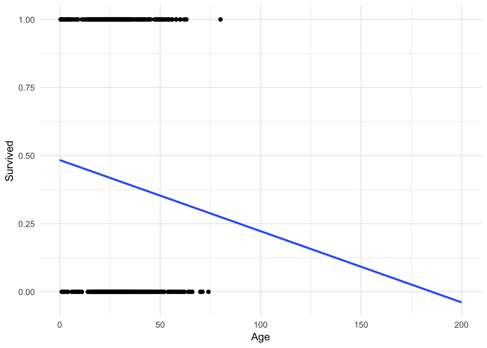
What happens if a 200 year old person is on the Titanic? They would have a \(-.1\) probability of surviving. But you cannot have a probability outside of the \([0,1]\) interval! Admittedly this is a trivial example, but in other circumstances this can become a more realistic scenario.
Or what if we didn’t want to predict survival, but instead predict the port from which an individual departed (Cherbourg, Queenstown, or Southampton). We could try and code this as a numeric response variable:
| Numeric value | Port |
|---|---|
| 1 | Cherbourg |
| 2 | Queenstown |
| 3 | Southampton |
But why not instead code it:
| Numeric value | Port |
|---|---|
| 1 | Queenstown |
| 2 | Cherbourg |
| 3 | Southampton |
Or even:
| Numeric value | Port |
|---|---|
| 1 | Southampton |
| 2 | Cherbourg |
| 3 | Queenstown |
There is no inherent ordering to this variable. Any claimed linear relationship between a predictor and port of embarkation is completely dependent on how we convert the classes to numeric values.
Logistic regression
Rather than modeling the response \(Y\) directly, logistic regression instead models the probability that \(Y\) belongs to a particular category. In our first Titanic example, the probability of survival can be written as:
\[P(\text{survival} = \text{Yes} | \text{age})\]
The values of \(P(\text{survival} = \text{Yes} | \text{age})\) (or simply \(p(\text{survival})\) will range between 0 and 1. Given that predicted probability, we could predict anyone with for whom \(p(\text{survival}) > .5\) will survive the sinking, and anyone else will die.2
We can estimate the logistic regression model using the glm function.
survive_age <- glm(Survived ~ Age, data = titanic, family = binomial)
summary(survive_age)##
## Call:
## glm(formula = Survived ~ Age, family = binomial, data = titanic)
##
## Deviance Residuals:
## Min 1Q Median 3Q Max
## -1.1488 -1.0361 -0.9544 1.3159 1.5908
##
## Coefficients:
## Estimate Std. Error z value Pr(>|z|)
## (Intercept) -0.05672 0.17358 -0.327 0.7438
## Age -0.01096 0.00533 -2.057 0.0397 *
## ---
## Signif. codes: 0 '***' 0.001 '**' 0.01 '*' 0.05 '.' 0.1 ' ' 1
##
## (Dispersion parameter for binomial family taken to be 1)
##
## Null deviance: 964.52 on 713 degrees of freedom
## Residual deviance: 960.23 on 712 degrees of freedom
## (177 observations deleted due to missingness)
## AIC: 964.23
##
## Number of Fisher Scoring iterations: 4Which produces a line that looks like this:
ggplot(titanic, aes(Age, Survived)) +
geom_point() +
geom_smooth(method = "glm", method.args = list(family = "binomial"),
se = FALSE)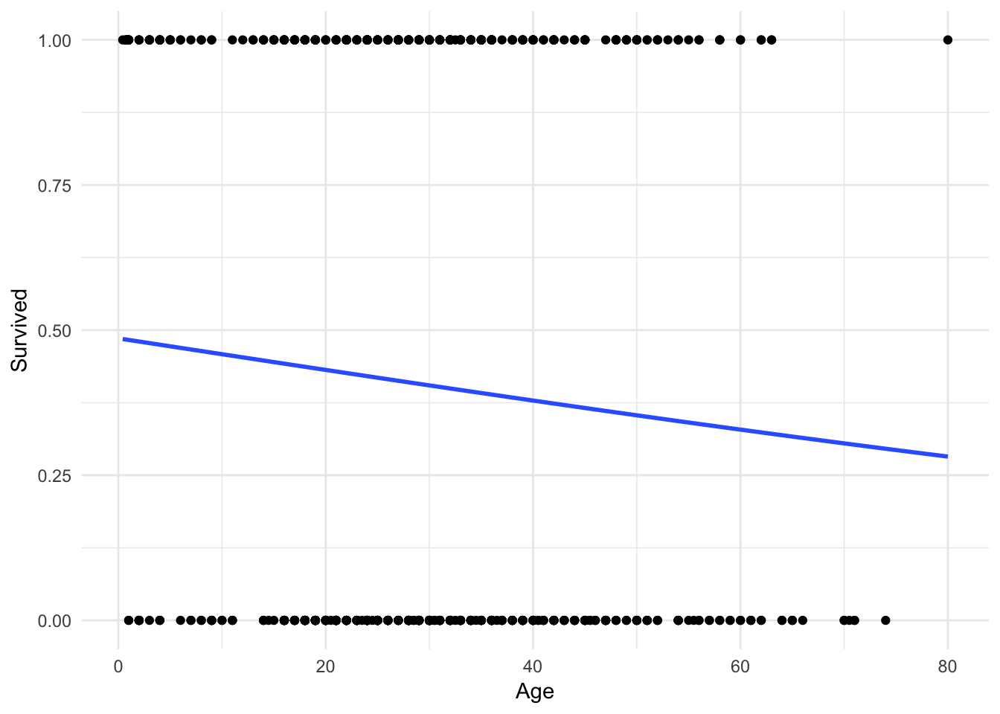
It’s hard to tell, but the line is not perfectly linear. Let’s expand the range of the x-axis to prove this:
ggplot(titanic, aes(Age, Survived)) +
geom_point() +
geom_smooth(method = "glm", method.args = list(family = "binomial"),
se = FALSE, fullrange = TRUE) +
xlim(0,200)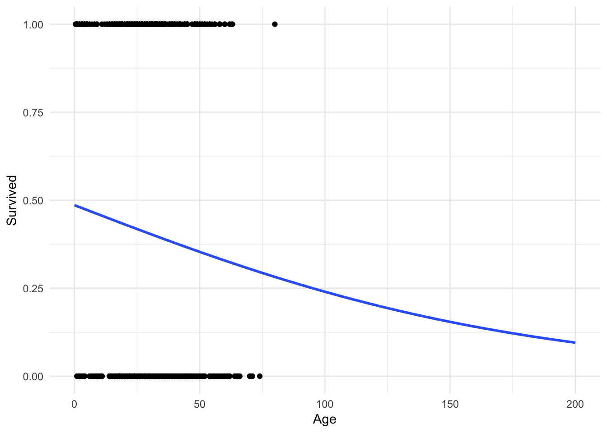
No more predictions that a 200 year old has a \(-.1\) probability of surviving!
Adding predictions
To visualise the predictions from a model, we start by generating an evenly spaced grid of values that covers the region where our data lies. First we use modelr::data_grid() to create a cleaned data frame of potential values:
titanic_age <- titanic %>%
data_grid(Age)
titanic_age## # A tibble: 88 × 1
## Age
## <dbl>
## 1 0.42
## 2 0.67
## 3 0.75
## 4 0.83
## 5 0.92
## 6 1.00
## 7 2.00
## 8 3.00
## 9 4.00
## 10 5.00
## # ... with 78 more rowsNext we could use the add_predictions function to produce the predicted probabilities. This worked very well for linear models; unfortunately it is not perfect for logistic regression. This is because, in truth, logistic regression directly estimates the log-odds for the outcome. Instead, we want the plain old predicted probability. To do this, use this custom function to convert from log-odds to predicted probabilties:3
logit2prob <- function(x){
exp(x) / (1 + exp(x))
}library(modelr)
titanic_age <- titanic_age %>%
add_predictions(survive_age) %>%
mutate(pred = logit2prob(pred))
titanic_age## # A tibble: 88 × 2
## Age pred
## <dbl> <dbl>
## 1 0.42 0.4846727
## 2 0.67 0.4839882
## 3 0.75 0.4837691
## 4 0.83 0.4835501
## 5 0.92 0.4833037
## 6 1.00 0.4830847
## 7 2.00 0.4803475
## 8 3.00 0.4776115
## 9 4.00 0.4748768
## 10 5.00 0.4721436
## # ... with 78 more rowsWith this information, we can now plot the logistic regression line using the estimated model (and not just ggplot2::geom_smooth):
ggplot(titanic_age, aes(Age, pred)) +
geom_line() +
labs(title = "Relationship Between Age and Surviving the Titanic",
y = "Predicted Probability of Survival")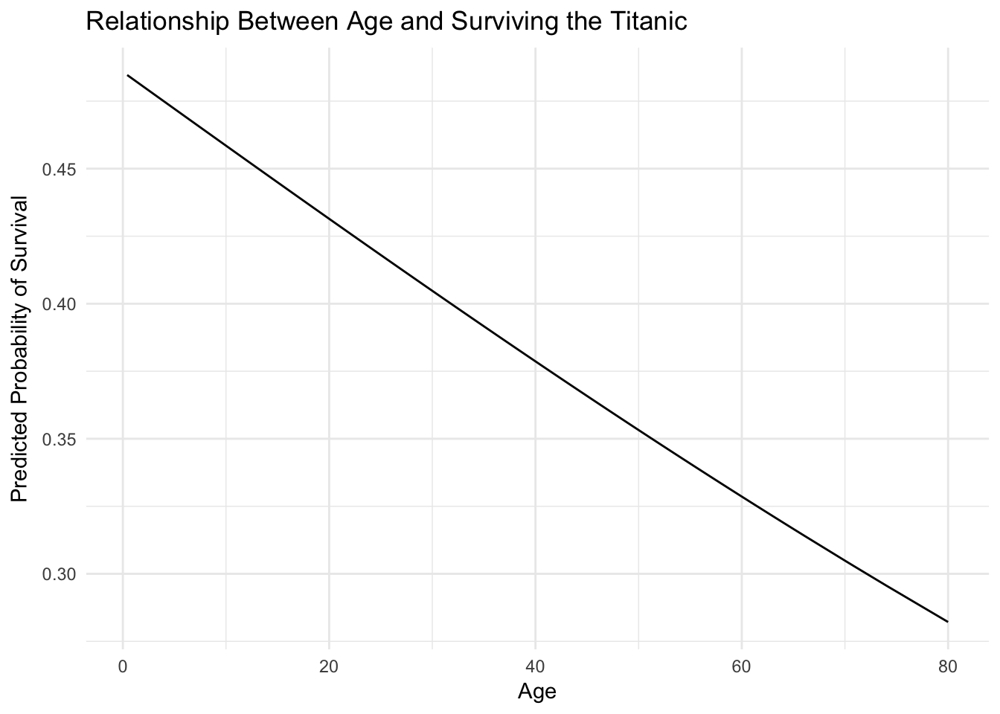
Multiple predictors
But as the old principle of the sea goes, “women and children first”. What if age isn’t the only factor effecting survival? Fortunately logistic regression handles multiple predictors:
survive_age_woman <- glm(Survived ~ Age + Sex, data = titanic,
family = binomial)
summary(survive_age_woman)##
## Call:
## glm(formula = Survived ~ Age + Sex, family = binomial, data = titanic)
##
## Deviance Residuals:
## Min 1Q Median 3Q Max
## -1.7405 -0.6885 -0.6558 0.7533 1.8989
##
## Coefficients:
## Estimate Std. Error z value Pr(>|z|)
## (Intercept) 1.277273 0.230169 5.549 2.87e-08 ***
## Age -0.005426 0.006310 -0.860 0.39
## Sexmale -2.465920 0.185384 -13.302 < 2e-16 ***
## ---
## Signif. codes: 0 '***' 0.001 '**' 0.01 '*' 0.05 '.' 0.1 ' ' 1
##
## (Dispersion parameter for binomial family taken to be 1)
##
## Null deviance: 964.52 on 713 degrees of freedom
## Residual deviance: 749.96 on 711 degrees of freedom
## (177 observations deleted due to missingness)
## AIC: 755.96
##
## Number of Fisher Scoring iterations: 4The coefficients essentially tell us the relationship between each individual predictor and the response, independent of other predictors. So this model tells us the relationship between age and survival, after controlling for the effects of gender. Likewise, it also tells us the relationship between gender and survival, after controlling for the effects of age. To get a better visualization of this, let’s use data_grid() and add_predictions() again:
titanic_age_sex <- titanic %>%
data_grid(Age, Sex) %>%
add_predictions(survive_age_woman) %>%
mutate(pred = logit2prob(pred))
titanic_age_sex## # A tibble: 176 × 3
## Age Sex pred
## <dbl> <chr> <dbl>
## 1 0.42 female 0.7815965
## 2 0.42 male 0.2330934
## 3 0.67 female 0.7813649
## 4 0.67 male 0.2328510
## 5 0.75 female 0.7812907
## 6 0.75 male 0.2327735
## 7 0.83 female 0.7812165
## 8 0.83 male 0.2326960
## 9 0.92 female 0.7811330
## 10 0.92 male 0.2326088
## # ... with 166 more rowsWith these predicted probabilities, we can now plot the separate effects of age and gender:
ggplot(titanic_age_sex, aes(Age, pred, color = Sex)) +
geom_line() +
labs(title = "Probability of Surviving the Titanic",
y = "Predicted Probability of Survival",
color = "Sex")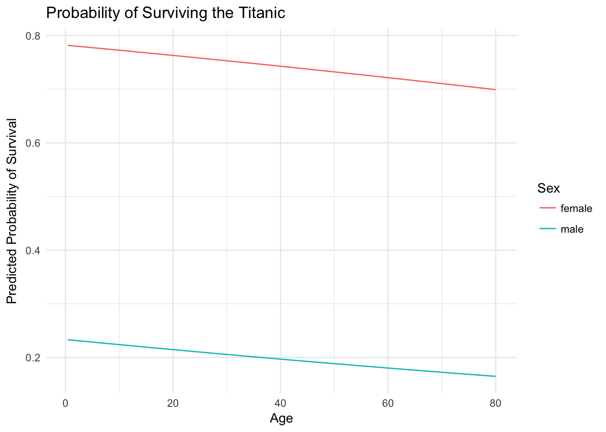
This graph illustrates a key fact about surviving the sinking of the Titanic - age was not really a dominant factor. Instead, one’s gender was much more important. Females survived at much higher rates than males, regardless of age.
Quadratic terms
Logistic regression, like linear regression, assumes each predictor has an independent and linear relationship with the response. That is, it assumes the relationship takes the form \(y = \beta_0 + \beta_{1}x\) looks something like this:
sim_line <- tibble(x = runif(1000),
y = x * 1)
ggplot(sim_line, aes(x, y)) +
geom_line()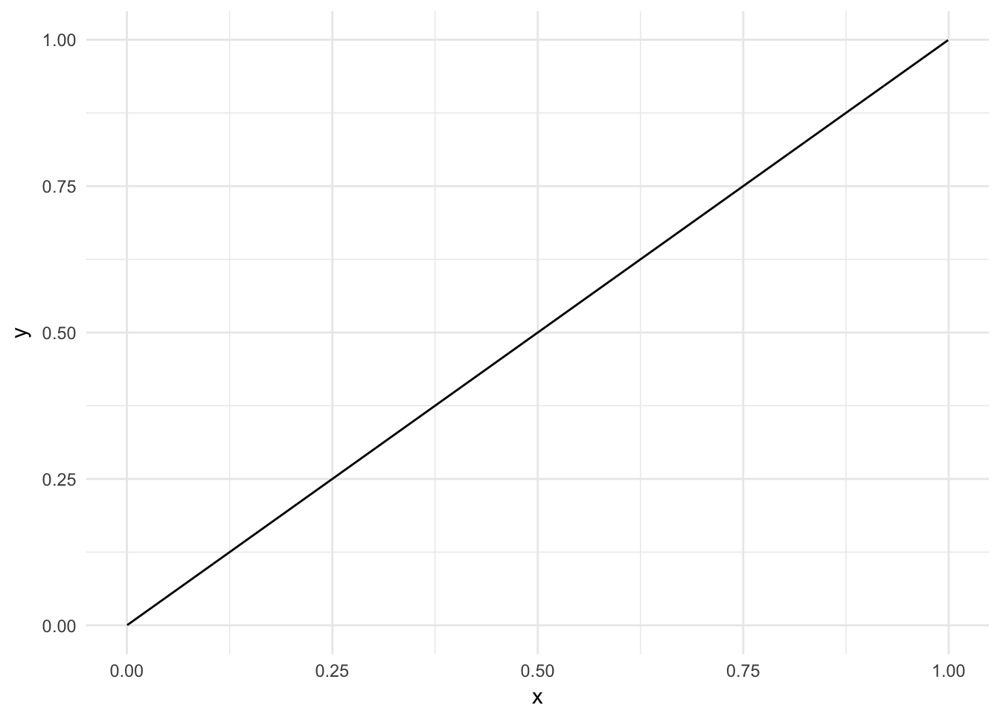
But from algebra we know that variables can have non-linear relationships. Perhaps instead the relationship is parabolic like \(y = \beta_0 + \beta_{1}x + \beta_{2}x^2\):
sim_line <- tibble(x = runif(1000, -1, 1),
y = x^2 + x)
ggplot(sim_line, aes(x, y)) +
geom_line()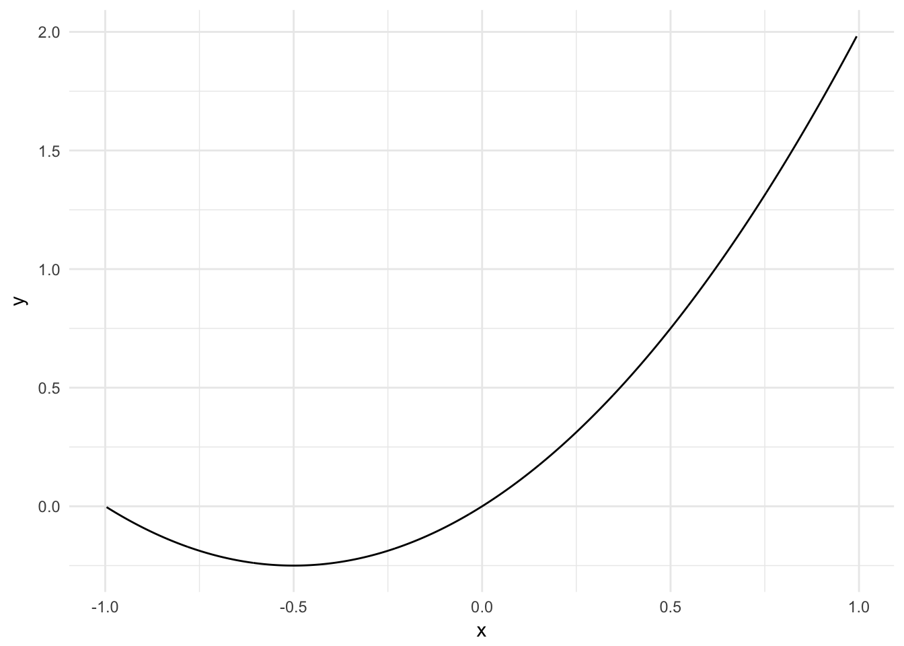
Or a more general quadratic equation \(y = \beta_0 + \beta_{1}x + \beta_{2}x^2 + \beta_{3}x^3\):
sim_line <- tibble(x = runif(1000, -1, 1),
y = x^3 + x^2 + x)
ggplot(sim_line, aes(x, y)) +
geom_line()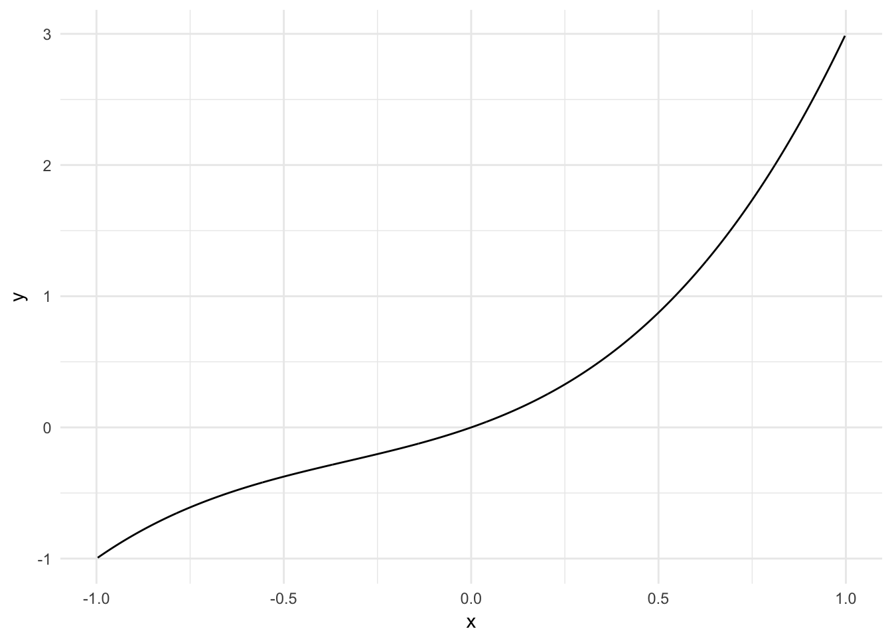
These can be accounted for in a logistic regression:
survive_age_square <- glm(Survived ~ Age + I(Age^2), data = titanic,
family = binomial)
summary(survive_age_square)##
## Call:
## glm(formula = Survived ~ Age + I(Age^2), family = binomial, data = titanic)
##
## Deviance Residuals:
## Min 1Q Median 3Q Max
## -1.2777 -1.0144 -0.9516 1.3421 1.4278
##
## Coefficients:
## Estimate Std. Error z value Pr(>|z|)
## (Intercept) 0.2688449 0.2722529 0.987 0.3234
## Age -0.0365193 0.0172749 -2.114 0.0345 *
## I(Age^2) 0.0003965 0.0002538 1.562 0.1183
## ---
## Signif. codes: 0 '***' 0.001 '**' 0.01 '*' 0.05 '.' 0.1 ' ' 1
##
## (Dispersion parameter for binomial family taken to be 1)
##
## Null deviance: 964.52 on 713 degrees of freedom
## Residual deviance: 957.81 on 711 degrees of freedom
## (177 observations deleted due to missingness)
## AIC: 963.81
##
## Number of Fisher Scoring iterations: 4titanic_age %>%
add_predictions(survive_age) %>%
mutate(pred = logit2prob(pred)) %>%
ggplot(aes(Age, pred)) +
geom_line() +
labs(title = "Relationship Between Age and Surviving the Titanic",
y = "Predicted Probability of Survival")
Here the parabolic term (\(\text{age}^2\)) is not actually meaningful. In other contexts it may be so.
Interactive terms
Another assumption of linear and logistic regression is that the relationships between predictors and responses are independent from one another. So for the age and gender example, we assume our function \(f\) looks something like:4
\[f = \beta_{0} + \beta_{1}\text{age} + \beta_{2}\text{gender}\]
However once again, that is an assumption. What if the relationship between age and the probability of survival is actually dependent on whether or not the individual is a female? This possibility would take the functional form:
\[f = \beta_{0} + \beta_{1}\text{age} + \beta_{2}\text{gender} + \beta_{3}(\text{age} \times \text{gender})\]
This is considered an interaction between age and gender. To estimate this in R, we simply specify Age * Sex in our formula for the glm() function:5
survive_age_woman_x <- glm(Survived ~ Age * Sex, data = titanic,
family = binomial)
summary(survive_age_woman_x)##
## Call:
## glm(formula = Survived ~ Age * Sex, family = binomial, data = titanic)
##
## Deviance Residuals:
## Min 1Q Median 3Q Max
## -1.9401 -0.7136 -0.5883 0.7626 2.2455
##
## Coefficients:
## Estimate Std. Error z value Pr(>|z|)
## (Intercept) 0.59380 0.31032 1.913 0.05569 .
## Age 0.01970 0.01057 1.863 0.06240 .
## Sexmale -1.31775 0.40842 -3.226 0.00125 **
## Age:Sexmale -0.04112 0.01355 -3.034 0.00241 **
## ---
## Signif. codes: 0 '***' 0.001 '**' 0.01 '*' 0.05 '.' 0.1 ' ' 1
##
## (Dispersion parameter for binomial family taken to be 1)
##
## Null deviance: 964.52 on 713 degrees of freedom
## Residual deviance: 740.40 on 710 degrees of freedom
## (177 observations deleted due to missingness)
## AIC: 748.4
##
## Number of Fisher Scoring iterations: 4As before, let’s estimate predicted probabilities and plot the interactive effects of age and gender.
titanic_age_sex_x <- titanic %>%
data_grid(Age, Sex) %>%
add_predictions(survive_age_woman_x) %>%
mutate(pred = logit2prob(pred))
titanic_age_sex_x## # A tibble: 176 × 3
## Age Sex pred
## <dbl> <chr> <dbl>
## 1 0.42 female 0.6461311
## 2 0.42 male 0.3245488
## 3 0.67 female 0.6472564
## 4 0.67 male 0.3233762
## 5 0.75 female 0.6476162
## 6 0.75 male 0.3230014
## 7 0.83 female 0.6479758
## 8 0.83 male 0.3226269
## 9 0.92 female 0.6483802
## 10 0.92 male 0.3222058
## # ... with 166 more rowsggplot(titanic_age_sex_x, aes(Age, pred, color = Sex)) +
geom_line() +
labs(title = "Probability of Surviving the Titanic",
y = "Predicted Probability of Survival",
color = "Sex")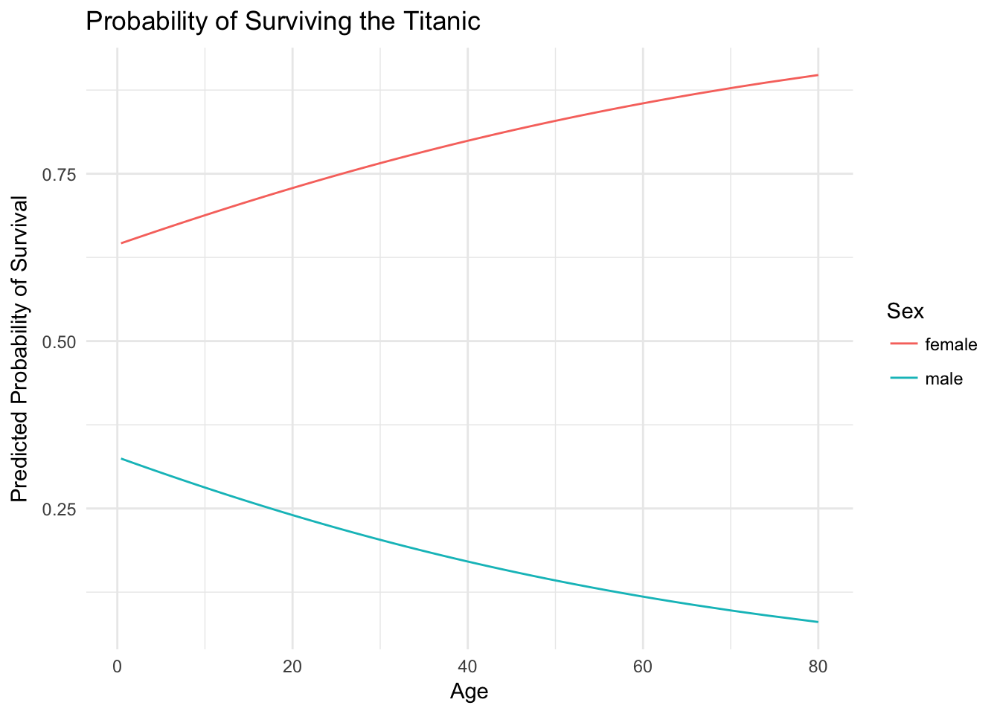
And now our minds are blown once again! For women, as age increases the probability of survival also increases. However for men, we see the opposite relationship: as age increases the probability of survival decreases. Again, the basic principle of saving women and children first can be seen empirically in the estimated probability of survival. Male children are treated similarly to female children, and their survival is prioritized. Even still, the odds of survival are always worse for men than women, but the regression function clearly shows a difference from our previous results.
You may think then that it makes sense to throw in interaction terms (and quadratic terms) willy-nilly to all your regression models since we never know for sure if the relationship is strictly linear and independent. You could do that, but once you start adding more predictors (3, 4, 5, etc.) that will get very difficult to keep track of (five-way interactions are extremely difficult to interpret - even three-way get to be problematic). The best advice is to use theory and your domain knowledge as your guide. Do you have a reason to believe the relationship should be interactive? If so, test for it. If not, don’t.
Evaluating model accuracy
Accuracy of predictions
How do we know if a logistic regression model is good or bad? One evalation criteria simply asks: how accurate are the predictions? For instance, how often did our basic model just using age perform? First we need to get the predicted probabilities for each individual in the original dataset, convert the probability to a prediction (I use a \(.5\) cut-point), then see what percentage of predictions were the same as the actual survivals?
age_accuracy <- titanic %>%
add_predictions(survive_age) %>%
mutate(pred = logit2prob(pred),
pred = as.numeric(pred > .5))
mean(age_accuracy$Survived == age_accuracy$pred, na.rm = TRUE)## [1] 0.5938375\(59.4\%\) of the predictions based on age were correct. If we flipped a coin to make our predictions, we’d be right about 50% of the time. So this is a decent improvement. Of course, we also know that \(61.6\%\) of passengers died in the sinking, so if we just guessed that every passenger died we’d still be right more often than our predictive model. Maybe this model isn’t so great after all. What about our interactive age and gender model?
x_accuracy <- titanic %>%
add_predictions(survive_age_woman_x) %>%
mutate(pred = logit2prob(pred),
pred = as.numeric(pred > .5))
mean(x_accuracy$Survived == x_accuracy$pred, na.rm = TRUE)## [1] 0.780112This model is much better. Just by knowing an individual’s age and gender, we can predict with 78% whether he/she lives or dies.
Training/test sets
One issue with the previous approach is that we are fitting our model to the data, then using the same data to assess the model’s accuracy. This isn’t very appropriate because we will bias our model towards fitting the data that we have. We may fit our function to create the results we expect or desire, rather than the “true” function.
Instead, we can split our data into distinct training and test sets. The training set can be used repeatedly to explore or train different models. Once we have a stable model, we can apply it to the test set of held-out data to determine (unbiasedly) whether the model makes accurate predictions.
Let’s use this workflow instead. We can use resample_partition() from modelr to split titanic into a training and test set (we’ll allocate 70% of observations to the training set and 30% to the test set), reproduce the interactive model using only the training data, then make predictions on the test set and compare them to the actual, known survivals and deaths.
titanic_split <- resample_partition(titanic, c(test = 0.3, train = 0.7))
map(titanic_split, dim)## $test
## [1] 267 12
##
## $train
## [1] 624 12train_model <- glm(Survived ~ Age * Sex, data = titanic_split$train,
family = binomial)
summary(train_model)##
## Call:
## glm(formula = Survived ~ Age * Sex, family = binomial, data = titanic_split$train)
##
## Deviance Residuals:
## Min 1Q Median 3Q Max
## -1.8765 -0.7044 -0.6275 0.7196 2.0578
##
## Coefficients:
## Estimate Std. Error z value Pr(>|z|)
## (Intercept) 0.86628 0.38916 2.226 0.026010 *
## Age 0.01470 0.01335 1.101 0.270977
## Sexmale -1.82445 0.49785 -3.665 0.000248 ***
## Age:Sexmale -0.02759 0.01647 -1.675 0.094019 .
## ---
## Signif. codes: 0 '***' 0.001 '**' 0.01 '*' 0.05 '.' 0.1 ' ' 1
##
## (Dispersion parameter for binomial family taken to be 1)
##
## Null deviance: 669.07 on 493 degrees of freedom
## Residual deviance: 507.90 on 490 degrees of freedom
## (130 observations deleted due to missingness)
## AIC: 515.9
##
## Number of Fisher Scoring iterations: 4x_test_accuracy <- titanic_split$test %>%
as_tibble() %>%
add_predictions(train_model) %>%
mutate(pred = logit2prob(pred),
pred = as.numeric(pred > .5))
mean(x_test_accuracy$Survived == x_test_accuracy$pred, na.rm = TRUE)## [1] 0.7636364This is reassuring. \(76.4\%\) of the test set observations were accurately predicted. Remember, we explicitly set this up so that the model never saw the test observations, and they never factored into our decisionmaking process when we generated the model. This tells us that we did a pretty good job estimating the functional form \(f\) for the entire dataset, not just the training set.
Exercise: logistic regression with mental_health
Why do some people vote in elections while others do not? Typical explanations focus on a resource model of participation – individuals with greater resources, such as time, money, and civic skills, are more likely to participate in politics. An emerging theory assesses an individual’s mental health and its effect on political participation.6 Depression increases individuals’ feelings of hopelessness and political efficacy, so depressed individuals will have less desire to participate in politics. More importantly to our resource model of participation, individuals with depression suffer physical ailments such as a lack of energy, headaches, and muscle soreness which drain an individual’s energy and requires time and money to receive treatment. For these reasons, we should expect that individuals with depression are less likely to participate in election than those without symptoms of depression.
Use the mental_health data set in library(rcfss) and logistic regression to predict whether or not an individual voted in the 1996 presidental election.7
library(rcfss)
mental_health## # A tibble: 1,317 × 5
## vote96 age educ female mhealth
## <dbl> <dbl> <dbl> <dbl> <dbl>
## 1 1 60 12 0 0
## 2 1 36 12 0 1
## 3 0 21 13 0 7
## 4 0 29 13 0 6
## 5 1 39 18 1 2
## 6 1 41 15 1 1
## 7 1 48 20 0 2
## 8 0 20 12 1 9
## 9 0 27 11 1 9
## 10 0 34 7 1 2
## # ... with 1,307 more rowsSplit the data into a training and test set (70/30%).
Click for the solution
mh_split <- resample_partition(mental_health, c(test = 0.3, train = 0.7))Estimate a logistic regression model of voter turnout using the training set and only
mhealthas the predictor. Estimate predicted probabilities and plot the logistic regression line usingggplot.Click for the solution
# estimate model mh_model <- glm(vote96 ~ mhealth, data = mh_split$train, family = binomial) tidy(mh_model)## term estimate std.error statistic p.value ## 1 (Intercept) 1.2397632 0.10644410 11.647082 2.374509e-31 ## 2 mhealth -0.1881686 0.02657547 -7.080538 1.435963e-12# estimate predicted probabilities mh_health <- mh_split$train %>% as_tibble() %>% data_grid(mhealth) %>% add_predictions(mh_model) %>% mutate(pred = logit2prob(pred)) mh_health## # A tibble: 10 × 2 ## mhealth pred ## <dbl> <dbl> ## 1 0 0.7755228 ## 2 1 0.7410810 ## 3 2 0.7033759 ## 4 3 0.6626794 ## 5 4 0.6194204 ## 6 5 0.5741785 ## 7 6 0.5276596 ## 8 7 0.4806554 ## 9 8 0.4339911 ## 10 9 0.3884685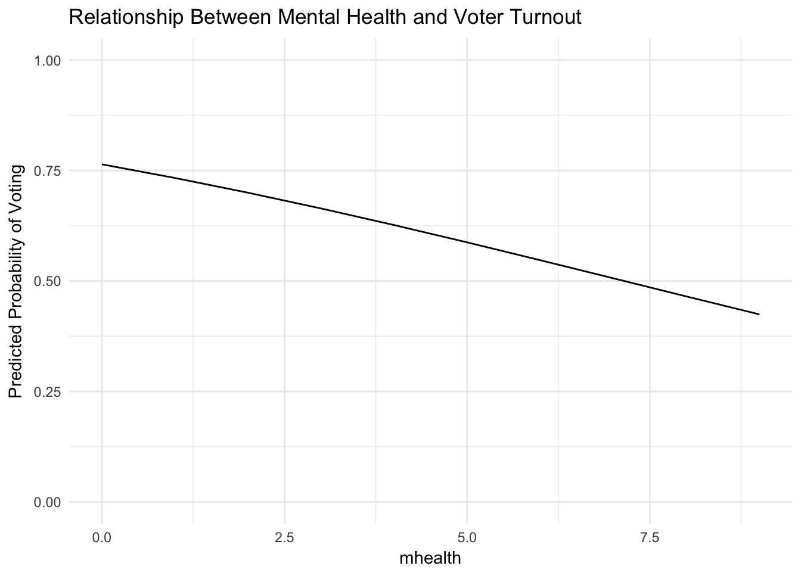# graph the line ggplot(mh_health, aes(mhealth, pred)) + geom_line() + labs(title = "Relationship Between Mental Health and Voter Turnout", y = "Predicted Probability of Voting") + scale_y_continuous(limits = c(0, 1))Calculate the accuracy rate of the model using the test set.
Click for the solution
mh_model_accuracy <- mh_split$test %>% as_tibble() %>% add_predictions(mh_model) %>% mutate(pred = logit2prob(pred), pred = as.numeric(pred > .5)) (mh_model_err <- mean(mh_model_accuracy$vote96 == mh_model_accuracy$pred, na.rm = TRUE))## [1] 0.6708861Estimate a second logistic regression model of voter turnout using the training set and all the predictors. Calculate it’s accuracy rate using the test set, and compare it to the original model. Which is better?
Click for the solution
# estimate model mh_model_all <- glm(vote96 ~ ., data = mh_split$train, family = binomial) tidy(mh_model_all)## term estimate std.error statistic p.value ## 1 (Intercept) -4.44016721 0.576674635 -7.6996055 1.364869e-14 ## 2 age 0.04403047 0.005408861 8.1404333 3.938659e-16 ## 3 educ 0.27216937 0.032938863 8.2628646 1.422176e-16 ## 4 female 0.02640803 0.155390678 0.1699461 8.650526e-01 ## 5 mhealth -0.12308493 0.028897636 -4.2593424 2.050292e-05# calculate accuracy rate on test set mh_model_all_accuracy <- mh_split$test %>% as_tibble() %>% add_predictions(mh_model_all) %>% mutate(pred = logit2prob(pred), pred = as.numeric(pred > .5)) (mh_model_all_err <- mean(mh_model_all_accuracy$vote96 == mh_model_all_accuracy$pred, na.rm = TRUE))
The model with all predictors has a 2.78% higher accuracy rate than predictions based only on mental health.## [1] 0.6987342
Session Info
devtools::session_info()## setting value
## version R version 3.3.2 (2016-10-31)
## system x86_64, darwin13.4.0
## ui RStudio (1.0.136)
## language (EN)
## collate en_US.UTF-8
## tz America/Chicago
## date 2017-03-06
##
## package * version date source
## assertthat 0.1 2013-12-06 CRAN (R 3.3.0)
## backports 1.0.5 2017-01-18 CRAN (R 3.3.2)
## base64enc 0.1-3 2015-07-28 CRAN (R 3.3.0)
## bigrquery * 0.3.0 2016-06-28 CRAN (R 3.3.0)
## bitops 1.0-6 2013-08-17 CRAN (R 3.3.0)
## boot * 1.3-18 2016-02-23 CRAN (R 3.3.2)
## broom * 0.4.2 2017-02-13 CRAN (R 3.3.2)
## car 2.1-4 2016-12-02 CRAN (R 3.3.2)
## caret * 6.0-73 2016-11-10 CRAN (R 3.3.2)
## class 7.3-14 2015-08-30 CRAN (R 3.3.2)
## codetools 0.2-15 2016-10-05 CRAN (R 3.3.2)
## colorspace 1.3-2 2016-12-14 CRAN (R 3.3.2)
## config 0.2 2016-08-02 CRAN (R 3.3.0)
## curl * 2.3 2016-11-24 CRAN (R 3.3.2)
## DBI 0.5-1 2016-09-10 CRAN (R 3.3.0)
## devtools 1.12.0 2016-06-24 CRAN (R 3.3.0)
## digest 0.6.12 2017-01-27 CRAN (R 3.3.2)
## dplyr * 0.5.0 2016-06-24 CRAN (R 3.3.0)
## e1071 * 1.6-8 2017-02-02 CRAN (R 3.3.2)
## evaluate 0.10 2016-10-11 CRAN (R 3.3.0)
## FNN * 1.1 2013-07-31 CRAN (R 3.3.0)
## forcats * 0.2.0 2017-01-23 CRAN (R 3.3.2)
## foreach * 1.4.3 2015-10-13 CRAN (R 3.3.0)
## foreign 0.8-67 2016-09-13 CRAN (R 3.3.2)
## gam * 1.14 2016-09-10 CRAN (R 3.3.0)
## gapminder * 0.2.0 2015-12-31 CRAN (R 3.3.0)
## gbm * 2.1.1 2015-03-11 CRAN (R 3.3.0)
## geosphere 1.5-5 2016-06-15 CRAN (R 3.3.0)
## ggdendro * 0.1-20 2017-02-27 local
## ggmap * 2.7 2016-12-07 Github (dkahle/ggmap@c6b7579)
## ggplot2 * 2.2.1 2016-12-30 CRAN (R 3.3.2)
## ggrepel * 0.6.5 2016-11-24 CRAN (R 3.3.2)
## ggstance * 0.3 2016-11-16 CRAN (R 3.3.2)
## gridExtra * 2.2.1 2016-02-29 cran (@2.2.1)
## gtable 0.2.0 2016-02-26 CRAN (R 3.3.0)
## haven * 1.0.0 2016-09-23 cran (@1.0.0)
## here * 0.0-6 2017-02-04 Github (krlmlr/here@007bfd9)
## hexbin * 1.27.1 2015-08-19 CRAN (R 3.3.0)
## highr 0.6 2016-05-09 CRAN (R 3.3.0)
## hms 0.3 2016-11-22 CRAN (R 3.3.2)
## htmltools 0.3.5 2016-03-21 CRAN (R 3.3.0)
## htmlwidgets 0.8 2016-11-09 CRAN (R 3.3.1)
## httpuv 1.3.3 2015-08-04 CRAN (R 3.3.0)
## httr * 1.2.1 2016-07-03 CRAN (R 3.3.0)
## igraph 1.0.1 2015-06-26 CRAN (R 3.3.0)
## ISLR * 1.0 2013-06-11 CRAN (R 3.3.0)
## iterators 1.0.8 2015-10-13 CRAN (R 3.3.0)
## janeaustenr 0.1.4 2016-10-26 CRAN (R 3.3.0)
## jpeg 0.1-8 2014-01-23 cran (@0.1-8)
## jsonlite * 1.2 2016-12-31 CRAN (R 3.3.2)
## kknn * 1.3.1 2016-03-26 CRAN (R 3.3.0)
## knitr * 1.15.1 2016-11-22 cran (@1.15.1)
## labeling 0.3 2014-08-23 CRAN (R 3.3.0)
## lattice * 0.20-34 2016-09-06 CRAN (R 3.3.2)
## lazyeval 0.2.0 2016-06-12 CRAN (R 3.3.0)
## lme4 1.1-12 2016-04-16 cran (@1.1-12)
## lubridate * 1.6.0 2016-09-13 CRAN (R 3.3.0)
## lvplot * 0.2.0.9000 2017-01-06 Github (hadley/lvplot@8ce61c7)
## magrittr 1.5 2014-11-22 CRAN (R 3.3.0)
## mapproj 1.2-4 2015-08-03 CRAN (R 3.3.0)
## maps * 3.1.1 2016-07-27 cran (@3.1.1)
## MASS 7.3-45 2016-04-21 CRAN (R 3.3.2)
## Matrix 1.2-8 2017-01-20 CRAN (R 3.3.2)
## MatrixModels * 0.4-1 2015-08-22 CRAN (R 3.3.0)
## memoise 1.0.0 2016-01-29 CRAN (R 3.3.0)
## mgcv 1.8-17 2017-02-08 CRAN (R 3.3.2)
## microbenchmark * 1.4-2.1 2015-11-25 CRAN (R 3.3.0)
## mime 0.5 2016-07-07 CRAN (R 3.3.0)
## minqa 1.2.4 2014-10-09 cran (@1.2.4)
## mnormt 1.5-5 2016-10-15 CRAN (R 3.3.0)
## ModelMetrics 1.1.0 2016-08-26 CRAN (R 3.3.0)
## modelr * 0.1.0 2016-08-31 CRAN (R 3.3.0)
## modeltools 0.2-21 2013-09-02 CRAN (R 3.3.0)
## munsell 0.4.3 2016-02-13 CRAN (R 3.3.0)
## nlme 3.1-131 2017-02-06 CRAN (R 3.3.2)
## nloptr 1.0.4 2014-08-04 cran (@1.0.4)
## NLP 0.1-9 2016-02-18 CRAN (R 3.3.0)
## nnet * 7.3-12 2016-02-02 CRAN (R 3.3.2)
## nycflights13 * 0.2.2 2017-01-27 CRAN (R 3.3.2)
## pbkrtest 0.4-6 2016-01-27 CRAN (R 3.3.0)
## plyr 1.8.4 2016-06-08 CRAN (R 3.3.0)
## png 0.1-7 2013-12-03 cran (@0.1-7)
## pROC * 1.9.1 2017-02-05 CRAN (R 3.3.2)
## profvis * 0.3.3 2017-01-14 CRAN (R 3.3.2)
## proto 1.0.0 2016-10-29 CRAN (R 3.3.0)
## psych 1.6.12 2017-01-08 CRAN (R 3.3.2)
## purrr * 0.2.2 2016-06-18 CRAN (R 3.3.0)
## quantreg * 5.29 2016-09-04 CRAN (R 3.3.0)
## R6 2.2.0 2016-10-05 CRAN (R 3.3.0)
## randomForest * 4.6-12 2015-10-07 CRAN (R 3.3.0)
## rappdirs 0.3.1 2016-03-28 CRAN (R 3.3.0)
## rcfss * 0.1.4 2017-02-28 local
## Rcpp 0.12.9 2017-01-14 CRAN (R 3.3.2)
## readr * 1.0.0 2016-08-03 CRAN (R 3.3.0)
## readxl * 0.1.1 2016-03-28 CRAN (R 3.3.0)
## rebird * 0.3.0 2016-03-23 CRAN (R 3.3.0)
## reshape2 1.4.2 2016-10-22 CRAN (R 3.3.0)
## RgoogleMaps 1.4.1 2016-09-18 cran (@1.4.1)
## rjson 0.2.15 2014-11-03 cran (@0.2.15)
## rmarkdown 1.3 2016-12-21 CRAN (R 3.3.2)
## rprojroot 1.2 2017-01-16 CRAN (R 3.3.2)
## rsconnect 0.7 2016-12-21 CRAN (R 3.3.2)
## RSQLite * 1.1-2 2017-01-08 CRAN (R 3.3.2)
## rstudioapi 0.6 2016-06-27 CRAN (R 3.3.0)
## rvest * 0.3.2 2016-06-17 CRAN (R 3.3.0)
## scales * 0.4.1 2016-11-09 CRAN (R 3.3.1)
## shiny * 1.0.0 2017-01-12 CRAN (R 3.3.2)
## slam 0.1-40 2016-12-01 CRAN (R 3.3.2)
## SnowballC 0.5.1 2014-08-09 cran (@0.5.1)
## sp 1.2-4 2016-12-22 CRAN (R 3.3.2)
## sparklyr * 0.5.2 2017-02-16 CRAN (R 3.3.2)
## SparseM * 1.74 2016-11-10 CRAN (R 3.3.2)
## stringi 1.1.2 2016-10-01 CRAN (R 3.3.0)
## stringr * 1.1.0 2016-08-19 cran (@1.1.0)
## survival * 2.40-1 2016-10-30 CRAN (R 3.3.0)
## tibble * 1.2 2016-08-26 cran (@1.2)
## tidyr * 0.6.1 2017-01-10 CRAN (R 3.3.2)
## tidytext * 0.1.2 2016-10-28 CRAN (R 3.3.0)
## tidyverse * 1.1.1 2017-01-27 CRAN (R 3.3.2)
## titanic * 0.1.0 2015-08-31 CRAN (R 3.3.0)
## tm 0.6-2 2015-07-03 CRAN (R 3.3.0)
## tokenizers 0.1.4 2016-08-29 CRAN (R 3.3.0)
## topicmodels * 0.2-4 2016-05-23 CRAN (R 3.3.0)
## tree * 1.0-37 2016-01-21 CRAN (R 3.3.0)
## withr 1.0.2 2016-06-20 CRAN (R 3.3.0)
## XML * 3.98-1.5 2016-11-10 CRAN (R 3.3.2)
## xml2 * 1.1.1 2017-01-24 CRAN (R 3.3.2)
## xtable 1.8-2 2016-02-05 CRAN (R 3.3.0)
## yaml 2.1.14 2016-11-12 cran (@2.1.14)General at least as applied to the Titanic. I’d like to think technology has advanced some since the early 20th century that the same patterns do not apply today. Not that sinking ships have gone away.↩
The threshold can be adjusted depending on how conservative or risky of a prediction you wish to make.↩
Alternatively, we can use
broom::augmentto add predicted probabilities for the original dataset:library(broom) augment(survive_age, newdata = titanic_age, type.predict = "response") %>% as_tibble()## # A tibble: 88 × 4 ## Age pred .fitted .se.fit ## <dbl> <dbl> <dbl> <dbl> ## 1 0.42 0.4846727 0.4846727 0.04285304 ## 2 0.67 0.4839882 0.4839882 0.04255168 ## 3 0.75 0.4837691 0.4837691 0.04245533 ## 4 0.83 0.4835501 0.4835501 0.04235903 ## 5 0.92 0.4833037 0.4833037 0.04225074 ## 6 1.00 0.4830847 0.4830847 0.04215452 ## 7 2.00 0.4803475 0.4803475 0.04095580 ## 8 3.00 0.4776115 0.4776115 0.03976503 ## 9 4.00 0.4748768 0.4748768 0.03858327 ## 10 5.00 0.4721436 0.4721436 0.03741165 ## # ... with 78 more rowsnewdata = titanic- produces a data frame containing all the original variables + the predicted probability for the observationtype.predict = "response"- ensures we get the predicted probabilities, not the logged version
In mathematical truth, it looks more like: \[P(\text{survival} = \text{Yes} | \text{age}, \text{gender}) = \frac{1}{1 + e^{-(\beta_{0} + \beta_{1}\text{age} + \beta_{2}\text{gender})}}\]↩
R automatically includes constituent terms, so this turns into
Age + Sex + Age * Sex. Generally you always want to include constituent terms in a regression model with an interaction.↩Ojeda, C. (2015). Depression and political participation. Social Science Quarterly, 96(5), 1226-1243.↩
Update
rcfssusingdevtools::install_github("uc-cfss/rcfss")if you cannot access the data set.↩
This work is licensed under the CC BY-NC 4.0 Creative Commons License.